Início
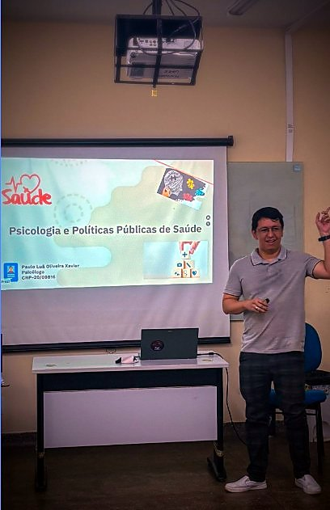
Paulo Luã Oliveira Xavier (CRP-20/09816) é psicólogo, mestre em Antropologia Social pela Universidade Federal de Roraima (UFRR) e especialista em Psicologia Jurídica e em Psicologia Social. A trajetória articula três campos — Psicologia, Antropologia e Direito — e se concretiza na rede pública de assistência social de Boa Vista, Roraima, em atuação dirigida a famílias, comunidades e pessoas em situação de mobilidade, cujas demandas submetem o referencial teórico à prova da prática.
Foi nessa rede que a trajetória de Paulo ganhou forma: sua atuação situa-se no Sistema Único de Assistência Social (SUAS), na Proteção Social Básica, organizada pela Política Nacional de Assistência Social em torno da prevenção de situações de risco, do desenvolvimento de potencialidades e do fortalecimento dos vínculos familiares e comunitários (PNAS, 2004; CFP, 2021). Desde 2019, integra a equipe técnica de referência do CRAS Cristiana Vicente Nunes, vinculado à Secretaria Municipal de Assistência e Desenvolvimento Social (SEMADS), e, nesse mesmo ano, exerceu a docência como professor substituto na UFRR. Desde 2023, compõe o quadro funcional da Secretaria do Trabalho e Bem-estar Social (SETRABES), onde atua no Centro de Atendimento Social (CAS Vila Jardim), serviço de convivência e fortalecimento de vínculos da rede estadual, e onde atuou também na Coordenação Estadual da Política de Enfrentamento às Drogas (CEPED).
Dessa prática nasce a pesquisa de Paulo e, por sua vez, a pesquisa volta ao serviço. O eixo principal é o trabalho do psicólogo na Proteção Social Básica, examinado à luz da Psicologia Social e em diálogo com as ciências sociais. A ele somam-se a migração venezuelana e o povo Warao, a prevenção ao uso de substâncias psicoativas e, em fase anterior, a Psicologia da Religião e a violência escolar. A produção compreende artigo em periódico, capítulos de livro, trabalhos em anais, dissertação e comunicações em eventos nacionais, orientados pela questão de como serviços públicos, ciência e direitos humanos podem se articular em bases éticas, técnicas e respeitosas.
Este sítio acompanha o percurso de Paulo do começo ao fim, em leitura contínua, e cada seção retoma a anterior. O Currículo apresenta a formação e a trajetória profissional; a Produção acadêmica reúne os trabalhos publicados e seus indicadores; as Áreas de interesse mostram como prática e pesquisa se alimentam; a seção Psicologia em Roraima traz um panorama da distribuição de psicólogas(os) no estado e da produção sobre a atuação no CRAS; as Leituras e fontes reúnem livros, sites e mapas que Paulo indica; o Contato indica onde encontrar o autor e seus perfis; e as Referências listam as obras citadas na página inicial e nas Áreas de interesse.
Currículo
A formação de Paulo, ponto de partida dessa trajetória, combina a escuta social da Psicologia, o olhar etnográfico e crítico da Antropologia e o repertório normativo do campo sociojurídico: graduação em Psicologia (2015) e mestrado em Antropologia Social (2020), ambos na UFRR, e duas especializações: Psicologia Jurídica (2018), motivada pela interface entre Psicologia e Direito, e Psicologia Social (2022). No plano profissional, a atuação como psicólogo de CRAS na rede municipal remonta a 2019; desde 2023, estende-se à SETRABES, no CAS Vila Jardim, com atuação também na CEPED. A cronologia completa, com os marcos de cada etapa, segue abaixo.
Formação e trajetória
Toque em um item para ver mais informações.
2015Graduação em PsicologiaUniversidade Federal de Roraima (UFRR)
Na graduação em Psicologia pela UFRR, Paulo participou da organização do Grupo de Estudo Cine Psi (2012 e 2014) e da V Semana de Psicologia (2013). O trabalho de conclusão, A fé como sacronegócio, analisa a relação entre o discurso institucional da Igreja Universal do Reino de Deus e a violência. Em 2015, publicou ainda um artigo na revista Psicologia Argumento sobre psicologia escolar e necessidades especiais em Boa Vista.
2018Especialização em Psicologia JurídicaFaculdade Única
A especialização em Psicologia Jurídica, de 500 h, nasceu do interesse de Paulo pela interface entre Psicologia e Direito. O trabalho de conclusão, Criança migrante: uma análise da migração de crianças venezuelanas e suas implicações sobre os Direitos Humanos, uniu esse interesse ao tema da migração.
2019Ingresso na SEMADS como psicólogo de CRASSecretaria Municipal de Assistência e Desenvolvimento Social
Em 2019, Paulo passou a integrar a equipe técnica de referência do CRAS Cristiana Vicente Nunes, na Proteção Social Básica, trabalhando com famílias e comunidades do território por meio de escuta qualificada, acompanhamento familiar e articulação com a rede. Essa experiência foi apresentada em 2024 na III Mostra Nacional de Práticas em Psicologia no SUAS (etapa Norte, Manaus).
2019Professor substituto na UFRRSociologia, Psicologia como Ciência e Profissão, Estágio Básico III e Pesquisa em Psicologia II
No mesmo ano, Paulo exerceu a docência como professor substituto na UFRR, onde lecionou Sociologia, Psicologia como Ciência e Profissão, Estágio Básico III e Pesquisa em Psicologia II.
2020Mestrado em Antropologia SocialPPGANTS/UFRR
No mestrado, concluído em 2020 sob orientação de Carlos Alberto Marinho Cirino, Paulo estudou o deslocamento dos indígenas Warao para Boa Vista à luz da legislação nacional e internacional sobre os direitos dos povos indígenas. A dissertação, Migrantes indígenas: os Warao na cidade de Boa Vista-Roraima e o debate sobre os Direitos Humanos, de abordagem qualitativa e etnográfica, com pesquisa em Pacaraima, Boa Vista e Manaus, inaugurou sua linha de pesquisa sobre mobilidade indígena e direitos. No mesmo ano, publicou dois capítulos de livro sobre os Warao e participou do projeto de extensão Enquanto durar a pandemia: conversas sobre Antropologia e a vida acadêmica.
2021Ingresso em projeto de pesquisa sobre imigrantes venezuelanos em cárcereO duplo encarceramento (PAMC/RR), em andamento
Desde 2021, Paulo integra, sob coordenação de Carlos Alberto Marinho Cirino, o projeto O duplo encarceramento, que investiga a realidade de imigrantes refugiados venezuelanos privados de liberdade em Roraima e segue em andamento.
2022Especialização em Psicologia SocialUnião Brasileira de Faculdades (UniBF)
A especialização em Psicologia Social, de 420 h, voltou-se ao campo em que Paulo trabalha. O trabalho de conclusão, Psicologia e SUAS: o psicólogo na proteção social básica, examina o papel do psicólogo nesse nível de proteção.
2023Ingresso no quadro funcional da SETRABESPsicólogo no Centro de Atendimento Social (CAS Vila Jardim); atuou também na Coordenação Estadual da Política de Enfrentamento às Drogas (CEPED)
Em 2023, Paulo passou a compor o quadro da SETRABES, atuando no CAS Vila Jardim, serviço de convivência e fortalecimento de vínculos da rede estadual, e também na Coordenação Estadual da Política de Enfrentamento às Drogas (CEPED). Nessa área, fez o Treinamento sobre Novas Substâncias Psicoativas (UFSC, 80 h) e o curso da Política Nacional sobre Drogas (MDS, 20 h).
Docência, pesquisa e extensão
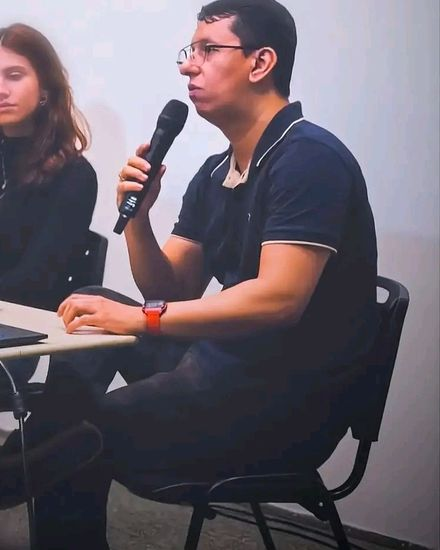
Além dos marcos da linha do tempo, o percurso de Paulo inclui ensino, pesquisa e extensão. No magistério superior, a docência foi exercida como professor substituto na UFRR, em 2019, nas disciplinas Sociologia, Psicologia como Ciência e Profissão, Estágio Básico III e Pesquisa em Psicologia II (quantitativa). Na pesquisa, Paulo participa, desde 2021, do projeto O duplo encarceramento: imigrantes refugiados venezuelanos na PAMC/RR, sob coordenação de Carlos Alberto Marinho Cirino, que investiga a realidade de imigrantes refugiados venezuelanos privados de liberdade em Roraima. Na extensão, Paulo participou, em 2020, do projeto Enquanto durar a pandemia: conversas sobre Antropologia e a vida acadêmica, já concluído. Na organização de eventos, constam o Grupo de Estudo Institucionalizado Cine Psi (UFRR, 2012 e 2014) e a V Semana de Psicologia da UFRR (2013).
Trabalhos de conclusão das especializações
Os trabalhos de conclusão das duas especializações de Paulo vinculam-se ao seu campo de atuação: na Psicologia Social (UniBF, 420 h), Psicologia e SUAS: o psicólogo na proteção social básica (DOI: 10.13140/RG.2.2.27653.83688); na Psicologia Jurídica (Faculdade Única, 500 h), Criança migrante: uma análise da migração de crianças venezuelanas e suas implicações sobre os Direitos Humanos.
Formação complementar
Completa esse percurso a formação complementar de Paulo, que compreende dezenas de cursos de extensão e aperfeiçoamento, ofertados por universidades, escolas de governo, ministérios, pela Fiocruz e pelo Senado Federal, agrupados a seguir por eixo temático; basta abrir cada grupo para ver os cursos.
SUAS e proteção social
Formação Básica no SUAS para Funções de Nível Superior (UFSC, 2022, 120 h); Proteção Social no SUAS a Indivíduos e Famílias em Situação de Violência (Ministério da Cidadania, 2021, 40 h); Controle exercido por Conselhos de Assistência Social (ESUC/TCU, 2021, 30 h); Controle Social (MDS, 2019–2020, 32 h); Medidas Socioeducativas em Meio Aberto (MDS, 2019, 40 h); Curso para Facilitadores do Famílias Fortes (MDH, 2023, 25 h); Programa Criança Feliz: Curso Básico (2020, 20 h), Promoção do Desenvolvimento Infantil (2021, 20 h) e Planejando as ações (2021, 10 h).
Cadastro Único, Bolsa Família e sistemas
Cadastro Único: conhecer para incluir (Ministério da Cidadania, 2021, 24 h); Fiscalização de Recebimento Indevido de Benefícios do PBF (MDS, 2021, 15 h); Bolsa Família na Saúde (Ministério da Saúde, 2020, 20 h); Sistema de Gestão do Programa Bolsa Família, SIGPBF (10 h), Sistema de Condicionalidades, SICON (15 h), Sistema de Gestão de Benefícios, SIBEC (20 h) e Aplicativo de Transmissão de Arquivos (4 h), todos do MDS em 2020.
Migração, refúgio e direitos humanos
Movimentos Migratórios e seus Conceitos (ENAP, 2020–2021, 200 h); Crianças e Adolescentes Migrantes (ENAP, 40 h); Migração e Saúde (ENAP, 30 h); MigraCidades: aprimorando a governança migratória (ENAP, 30 h); Proteção Socioassistencial a Migrantes em Situação de Vulnerabilidade (ENAP, 30 h); Direitos dos imigrantes e orientações para o atendimento (ENAP, 30 h); Introdução às Migrações Internacionais no Brasil Contemporâneo (DPU, 2019, 40 h); Cidadania e Direitos Humanos, Educação em Direitos Humanos e Direitos Humanos: Uma Declaração Universal (ENAP, 2019); Uma Introdução aos Direitos Humanos (Anistia Internacional, 2019, 4 h).
Drogas, saúde mental e atenção psicossocial
Políticas de Drogas e Sociedade (UFSC, 2024, 50 h); Treinamento sobre Novas Substâncias Psicoativas (UFSC, 2023, 80 h); Política Nacional sobre Drogas para gestores estaduais e municipais (MDS, 2023, 20 h); Saúde Mental e Atenção Psicossocial na COVID-19 (Fiocruz, 2020, 40 h).
Infância, juventude, gênero e diversidade
Fortalecimento da atuação dos conselheiros tutelares e lideranças comunitárias (UFSC, 2024, 40 h); Formação de Conselheiros: Conselhos Tutelares (ENAP, 2021, 20 h); Dialogando sobre a Lei Maria da Penha (Senado, 2018, 60 h); Psicologia e Diversidade Sexual (FBV, 2019, 60 h).
Psicologia, teoria e técnica
Psicologia do Desenvolvimento (100 h); Psicanálise: Teoria e Técnica (60 h); Introdução à Psicologia (40 h); Psicologia Clínica (20 h) e Psicologia Social (20 h), em cursos livres entre 2014 e 2019; Libras, Nível Básico I (UFRR, 2012, 20 h); Grupo de Estudo Cine Psi (UFRR, 2011–2014).
Gestão pública, tecnologia e acessibilidade
Inteligência Artificial no Contexto do Serviço Público (ENAP, 2021, 20 h); Novas Tecnologias para a Transformação Digital (ENAP, 30 h); Acessibilidade em espaços de uso público no Brasil (ENAP, 20 h); eMAG Conteudista (MDS, 20 h).
Direito, política e relações internacionais
Cursos do Senado Federal: Introdução ao Direito Constitucional (2017, 40 h), Política Contemporânea (2016, 60 h), Relações Internacionais: Teoria e História (2018, 60 h) e quatro cursos de Doutrina Política (2015, 20 h cada).
Áreas de atuação (Lattes)
No Currículo Lattes, Paulo declara como áreas de atuação Psicologia Social; Psicanálise; Psicologia da Religião; Antropologia da Religião; Psicologia Jurídica; Antropologia Jurídica (Direito).
Conceitos que orientam a prática
Os marcos acima pedem, para leitores de outras áreas, um glossário do próprio ofício de Paulo: apresentam-se a seguir os campos em que ele se formou e atua, a partir de definições oficiais, sobretudo as do Conselho Federal de Psicologia (CFP) e as da legislação da assistência social. A ordem parte do sistema em que o trabalho acontece, o SUAS, e segue para a Psicologia e suas áreas.
Assistência social e SUAS
O ponto de partida é o chão em que Paulo trabalha. A assistência social é, pela Constituição de 1988, política de seguridade social, direito de quem dela necessitar e dever do Estado, e foi regulamentada pela Lei Orgânica da Assistência Social (LOAS, Lei nº 8.742/1993). O Sistema Único de Assistência Social (SUAS) organiza essa política em todo o país e a divide em dois níveis: a Proteção Social Básica, de caráter preventivo, e a Proteção Social Especial, voltada a pessoas e famílias em situação de risco pessoal e social, com violação de direitos.
O Centro de Referência de Assistência Social (CRAS) é a unidade pública estatal, de base territorial, que funciona como porta de entrada da Proteção Social Básica. Nele, uma equipe de referência executa o Serviço de Proteção e Atendimento Integral à Família (PAIF) e organiza, no território, serviços de convivência e fortalecimento de vínculos, conforme a Tipificação Nacional de Serviços Socioassistenciais (Resolução CNAS nº 109/2009). A psicologia, nesse contexto, trabalha com escuta qualificada, acompanhamento familiar, atividades coletivas e articulação com a rede, sem o enquadre do consultório clínico. É nesse tipo de equipe e de serviço que Paulo atua desde 2019.
Fonte: Constituição Federal de 1988; Lei nº 8.742/1993 (LOAS); Resolução CNAS nº 109/2009; CFP, 2021.
Psicologia
Dentro desse sistema, a profissão de Paulo é a Psicologia. A Psicologia estuda e analisa os processos intrapessoais e as relações interpessoais, o que permite compreender o comportamento humano, individual e de grupo, nas instituições de qualquer natureza em que essas relações acontecem. O psicólogo aplica conhecimento teórico e técnico para identificar e intervir nos fatores que determinam as ações das pessoas, considerando sua história pessoal, familiar e social e relacionando-as a condições políticas, históricas e culturais.
A profissão foi regulamentada no Brasil pela Lei nº 4.119, de 27 de agosto de 1962. O CFP reconhece áreas de especialidade, como Psicologia Escolar e Educacional, Organizacional e do Trabalho, Jurídica, do Esporte, Clínica, Hospitalar, Social e Neuropsicologia. O título de especialista indica maior dedicação a uma área, mas não é condição para exercer a profissão. Paulo tem o título em duas delas, a Jurídica e a Social.
Fonte: CFP, Atribuições profissionais do psicólogo no Brasil; Resolução CFP nº 23/2022.
Como o psicólogo atua
Das áreas passa-se ao que o psicólogo faz, e é isso que orienta o trabalho de Paulo no serviço público. O psicólogo atua nos âmbitos da educação, da saúde, do lazer, do trabalho, da segurança, da justiça, das comunidades e da comunicação, com o objetivo de promover o respeito à dignidade e à integridade do ser humano. Suas funções incluem contribuir para o conhecimento científico da Psicologia, por meio da observação e da análise dos processos de desenvolvimento, aprendizagem e personalidade; fazer psicodiagnóstico e atendimento psicológico; promover a saúde mental na prevenção e no tratamento de distúrbios psíquicos; elaborar e aplicar técnicas de exame psicológico; e participar da construção de instrumentos e técnicas psicológicas por meio da pesquisa.
O trabalho pode ser individual ou em equipes multiprofissionais, em instituições públicas ou privadas, como hospitais, centros e postos de saúde, escolas, creches, associações comunitárias, empresas, varas da criança e do adolescente, varas de família e sistema penitenciário, entre outros lugares em que a atuação seja pertinente. O de Paulo se dá em equipes multiprofissionais da rede pública de assistência social.
Fonte: CFP, Atribuições profissionais do psicólogo no Brasil.
Psicologia Social
Duas dessas áreas marcam a formação de Paulo, e a primeira é a que mais sustenta sua prática. A Psicologia Social, tema da segunda especialização dele, é especialidade reconhecida pelo CFP desde 2003. Ela parte da compreensão da dimensão subjetiva dos fenômenos sociais e coletivos, sob diferentes enfoques teóricos e metodológicos, para problematizar a realidade e propor ações no âmbito social. Entre seus campos de atuação estão a educação, o trabalho, o lazer, o meio ambiente, a comunicação social, a justiça, a segurança e a assistência social. Em outro documento, o CFP acrescenta que o psicólogo social entende o sujeito em sua perspectiva histórica, sempre integrado ao social.
Fonte: CFP, Resolução nº 005/2003.
Psicologia Jurídica
A segunda é a Psicologia Jurídica, tema da primeira especialização de Paulo, e é definida pela Resolução CFP nº 23/2022 como a área de atuação profissional da Psicologia no âmbito do Sistema de Justiça e dos serviços do Sistema de Segurança Pública e do Sistema de Garantia de Direitos que executam sentenças judiciais, como o Sistema Prisional e o Sistema Socioeducativo.
Entre as atribuições listadas pelo CFP estão elaborar documentos psicológicos para o Sistema de Justiça, com sigilo, autonomia profissional e garantia dos direitos humanos; participar do planejamento e da avaliação de políticas públicas de cidadania e de prevenção da violência; acolher, orientar, avaliar e encaminhar pessoas ligadas ao fenômeno da violência; atuar nas medidas socioeducativas; contribuir, em equipes interprofissionais, com a Justiça da Infância e Juventude; intermediar conflitos cíveis sobre convivência, guarda e adoção, pelo princípio do melhor interesse da criança e do adolescente; promover mediação, conciliação e práticas restaurativas; e participar do controle social das políticas públicas, inclusive em Conselhos de Direitos.
Fonte: CFP, Resolução CFP nº 23/2022 (ementa de Psicologia Jurídica).
CREPOP: leitura recomendada
Esta é uma indicação de Paulo aos colegas. O Centro de Referência Técnica em Psicologia e Políticas Públicas (CREPOP) é mantido pelo CFP e pelos Conselhos Regionais e tem a função de orientar a atuação profissional nas políticas públicas. Por isso, vale a leitura a quem atua, ou pretende atuar, na assistência social, na saúde, no sistema socioeducativo e em outros serviços públicos. Seu principal produto são as Referências Técnicas, elaboradas com a participação da categoria, por meio de consulta pública, entre elas as de atuação no CRAS/SUAS, nos Centros de Atenção Psicossocial (CAPS), nas medidas socioeducativas, junto aos povos indígenas e quilombolas, e em políticas para a população em situação de rua e para mulheres em situação de violência.
Em destaque: obras da Assistência Social
Quatro publicações do CREPOP para quem atua no SUAS ou em serviços que dialogam com ele. Toque na capa para abrir o PDF no site do CREPOP.
- Atuação de Paulo
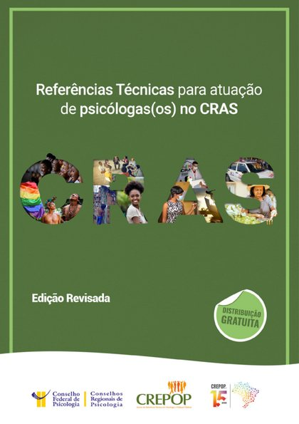
Proteção Social BásicaReferências Técnicas para atuação de psicólogas(os) no CRASEdição revisada da referência de 2008, base do trabalho cotidiano no território. 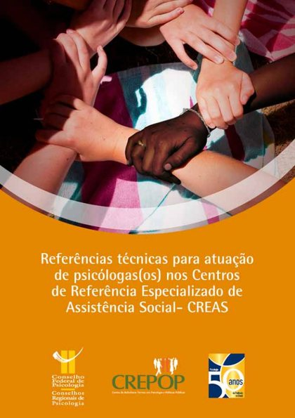
Proteção Social EspecialReferências técnicas para atuação de psicólogas(os) nos CREASOrienta o trabalho em contextos de violação de direitos e de violências.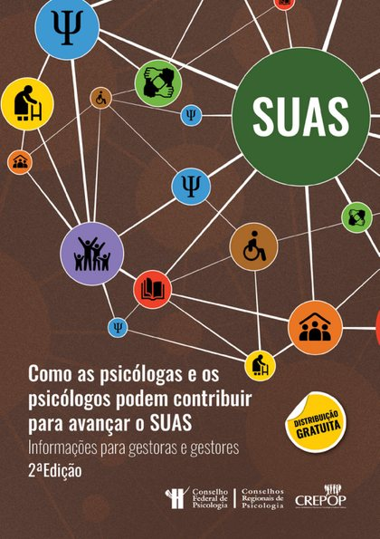
Gestão do SUASComo as psicólogas e os psicólogos podem contribuir para avançar o SUASInformações para gestoras e gestores, em 2ª edição (2025), com foco em direitos e intersetorialidade.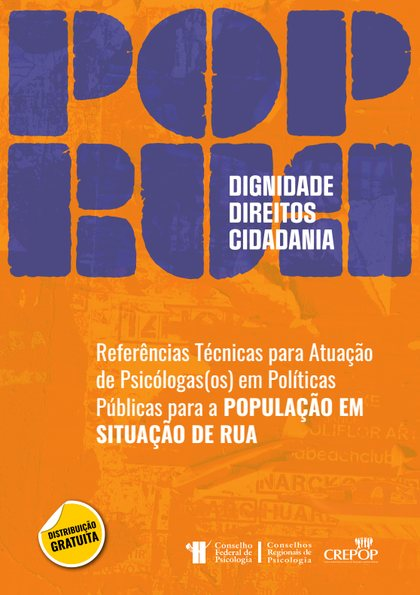
Situação de ruaReferências Técnicas para atuação em Políticas Públicas para a População em Situação de RuaDiretrizes éticas e técnicas ancoradas em dignidade, direitos e cidadania (2025).
Ver todas as publicações de Assistência Social · catálogo completo do CREPOP
Fonte: CFP, Referências Técnicas do CREPOP.
Produção acadêmica
O que o currículo mostra como prática aparece aqui como texto: a produção acadêmica de Paulo, assinada como Paulo Luã Oliveira Xavier (XAVIER, P. L. O.), articula as duas vertentes da formação. Na Psicologia, reúne um artigo sobre inclusão escolar, um trabalho sobre a prevenção ao uso de substâncias psicoativas entre adolescentes e o trabalho de conclusão de curso. Na Antropologia Social, a dissertação sobre os Warao em Boa Vista inaugurou a linha de pesquisa sobre mobilidade indígena e direitos, que permanece central e compreende capítulos de livro. Os trabalhos são apresentados a seguir por campo, e depois vêm as outras produções, os indicadores e as citações.
Artigos, capítulos e trabalhos acadêmicos
A produção de Paulo em Psicologia compreende um artigo em periódico, um trabalho completo publicado em anais e um trabalho de conclusão de curso. O trabalho em anais, Construção e validação de uma ferramenta lúdica: trabalhando a prevenção ao uso e/ou abuso de substâncias psicoativas (SPA) entre adolescentes (DOI: 10.13140/RG.2.2.22258.88001), trata da elaboração e da validação de um instrumento lúdico de prevenção dirigido ao público adolescente. Foi apresentado no III Simpósio do Programa de Pós-Graduação em Ciências da Saúde (Boa Vista/RR) e publicado nos anais, na revista Saúde & Diversidade (v. 9, p. 168-181), em coautoria com Santos e Morais. O artigo em periódico, Psicologia escolar e necessidades especiais: visão dos professores das escolas de Boa Vista, Roraima (DOI: 10.7213/psicol.argum.33.083.AO06), foi publicado na revista Psicologia Argumento (v. 33, n. 83, 2015), em coautoria com Loureto, Moreno, Silva e Santos, e examina a percepção docente acerca da inclusão escolar. O trabalho de conclusão de curso, A fé como sacronegócio: um estudo sobre a relação entre o discurso institucional da Igreja Universal do Reino de Deus e a violência na contemporaneidade (DOI: 10.13140/RG.2.2.12674.20167), analisa a relação entre o discurso institucional religioso e a violência. Os textos completos estão disponíveis no perfil do Academia.edu: ferramenta lúdica, psicologia escolar e trabalho de conclusão de curso (página no Academia.edu).
Do outro lado da formação de Paulo, a produção em Antropologia Social tem como núcleo a dissertação de mestrado Migrantes indígenas: os Warao na cidade de Boa Vista-Roraima e o debate sobre os Direitos Humanos (DOI: 10.13140/RG.2.2.16779.92960), desenvolvida no âmbito da Universidade Federal de Roraima (UFRR), que inaugura a linha de pesquisa sobre mobilidade indígena e direitos (texto completo; página no Academia.edu). Dessa linha derivam dois capítulos de livro, ambos de 2020. O primeiro, O Povo Warao e os Direitos Fundamentais: uma construção teórica das principais legislações nacionais e internacionais no que concerne os direitos humanos (DOI: 10.13140/RG.2.2.32976.64009), publicado na coletânea Yakera, Ka Ubanoko? O dinamismo da etnicidade Warao (Editora UFPE), sistematiza o conjunto normativo aplicável a essa população (texto completo). O segundo, Os imigrantes refugiados indígenas Warao em Roraima: os abrigos como políticas públicas de acolhimento (DOI: 10.13140/RG.2.2.21232.58887), discute os abrigos como política pública de acolhimento, em coautoria com Cirino e Santos (EDUFRR) (texto completo).
Outras produções
Fora desses dois eixos, a produção de Paulo inclui outros formatos. No campo sociojurídico, consta o capítulo Norma e Direito Amazônico, em coautoria com Ribeiro, Soares, Moura e Lima, na obra Direito Amazônico e Hermenêutica Constitucional: Fundamentos da República (Juruá, 2019), organizada por Juliana de Castro Menezes Rangel. O trabalho completo sobre o sacronegócio, em coautoria com Carlos Eduardo Ramos, integra os anais do III Seminário Internacional Sociedade e Fronteiras e V Encontro Norte-Nordeste de Psicologia Social (EDUFRR, 2016, p. 1174-1195).
Em 2024, voltando à prática no SUAS, Paulo apresentou na III Mostra Nacional de Práticas em Psicologia no SUAS (etapa Norte, Manaus) os trabalhos Psicologia e CRAS: o trabalho do psicólogo em um Centro de Referência de Assistência Social e Psicologia e prevenção: trabalhando estratégias lúdicas à prevenção ao uso abusivo de substâncias psicoativas (SPA), ambos com resumo nos anais. Antes disso, entre 2011 e 2016, constam resumos de Paulo em congressos de Psicologia sobre bullying, violência escolar e discurso institucional religioso, além de apresentações sobre Religião e Saúde Mental: estudo das representações de sagrado e a procura por atendimento psicológico (2012 e 2013).
Na mídia, Paulo aparece na entrevista Bolsa Família dá suporte para famílias refugiadas e migrantes no Brasil (2025) e na mesa-redonda Religião, preconceito e ideologia (2016).
Indicadores
O perfil público de Paulo no Google Acadêmico, no qual o nome também figura como “PLO Xavier” e “Pluão Xavier”, registra seis trabalhos, dos quais dois são citados, somando cinco citações, com índice h igual a 2 e índice i10 igual a 0. O artigo sobre psicologia escolar e necessidades especiais reúne três citações, e a dissertação sobre os Warao, duas. Os números abaixo resumem esse perfil; a contagem atualizada permanece disponível no Google Acadêmico, onde as entradas duplicadas foram reunidas.
Fonte: perfil público no Google Acadêmico e levantamento complementar da dissertação, conforme registrado neste sítio (atualização de outubro de 2026).
| Tipo | Trabalhos | Proporção |
|---|---|---|
| Artigo em periódico | 1 | |
| Trabalho completo em anais | 1 | |
| Capítulos de livro | 2 | |
| Dissertação | 1 | |
| Trabalho de conclusão de curso | 1 | |
| Total | 6 |
| Trabalho | Citações | Proporção |
|---|---|---|
| Psicologia escolar e necessidades especiais (artigo, 2015) | 3 | |
| Dissertação sobre os Warao (2020) | 2 | |
| Demais quatro trabalhos | 0 | |
| Total | 5 |
| Tipo | Trabalhos | Proporção |
|---|---|---|
| Artigos | 4 | |
| Dissertações | 2 | |
| Trabalho de conclusão de curso | 1 | |
| Capítulos de livro do próprio Paulo | 2 | |
| Total | 9 |
Lidos em conjunto, os quadros mostram que o perfil de Paulo reúne seis trabalhos: um artigo, um trabalho completo em anais, dois capítulos de livro, uma dissertação e um trabalho de conclusão de curso (Quadro 1). Do total, dois trabalhos são citados, o que corresponde a cerca de um terço da produção; as cinco citações registradas resultam em média aproximada de 0,8 citação por trabalho e de 2,5 citações por trabalho citado (Quadro 2). O artigo sobre psicologia escolar concentra três dessas citações (60%), e a dissertação, duas (40%), o que justifica o índice h igual a 2. A ausência de trabalhos com dez ou mais citações explica o índice i10 igual a 0.
Considerada à parte do perfil, a dissertação de Paulo é referenciada em nove trabalhos, dos quais sete são de outros autores, isto é, cerca de 78% do conjunto (Quadro 3). Os artigos representam a maior parcela, com quatro ocorrências, seguidos pelas dissertações e pelos capítulos do próprio Paulo, com duas cada, e pelo trabalho de conclusão de curso, com uma. Os valores médios e percentuais são aproximações calculadas a partir das contagens indicadas e acompanham a atualização do perfil.
Citações da produção
A dissertação Migrantes indígenas: os Warao na cidade de Boa Vista-Roraima e o debate sobre os Direitos Humanos (UFRR, 2020) é referenciada em nove trabalhos sobre o povo Warao, dos quais sete são de outros autores e dois são capítulos de livro do próprio Paulo. Esses trabalhos foram levantados em separado e, por isso, não integram os indicadores do Google Acadêmico apresentados acima.
Entre os artigos que a referenciam, constam Refugiados indígenas venezuelanos em Roraima: o caso do Povo Warao; Comunidades “Warao a Jonoko” e “Warao Yakera Ine”: resiliência e luta dos indígenas imigrantes refugiados venezuelanos contra a violação de direitos no estado de Roraima; A questão Warao no contexto diaspórico brasileiro; e O refúgio da etnia Warao: o direito internacional e as leis brasileiras no processo de acolhimento humanitário (2019 a 2023), de R. O. L. da Silva e V. M. Oliveira, publicado nos Anais do VI Simpósio Internacional em Direitos Humanos Aplicados. Entre as dissertações, figuram Transversalizar as políticas públicas: os desafios de acesso aos Centros de Referência em Assistência Social (CRAS) para as mulheres venezuelanas vivendo em ocupações urbanas em Boa Vista, de Clara de Oliveira Cunha (Unesp, 2023), e Diáspora dos índios Warao da Venezuela, de José Raimundo Torres dos Santos (PPGANTS/UFRR, 2019). Registra-se ainda o trabalho de conclusão de curso A atuação da Defensoria Pública da União em favor dos migrantes Warao no Brasil, de Millena de Almeida Corrêa (Direito, UnB, 2023). Completam o conjunto os dois capítulos de livro do próprio Paulo, já mencionados.
O artigo sobre psicologia escolar e necessidades especiais, trabalho mais citado do perfil, com três citações no Google Acadêmico, é referenciado, entre outros, por Trajetória da psicologia escolar em Roraima, de L. S. de Almeida et al., publicado em Observatório de la Economía Latinoamericana (v. 21, n. 1, p. 196–212, 2023). O conjunto completo e atualizado das citações permanece disponível no perfil do Google Acadêmico.
Áreas de interesse
Dos textos passa-se ao que os move. Os interesses de pesquisa de Paulo distribuem-se em quatro campos interdependentes: (i) a Psicologia Social e, nela, o trabalho do psicólogo na Proteção Social Básica; (ii) a migração e o refúgio; (iii) a Antropologia Social e as relações interétnicas; e (iv) a prevenção ao uso de substâncias psicoativas, com ênfase em gamificação e validação psicométrica de jogos. O eixo predominante é o primeiro, voltado a delimitar o que compete ao psicólogo, o que lhe é possível realizar e segundo quais parâmetros técnicos e éticos deve fazê-lo no território, em diálogo com as ciências sociais e sob a lógica dos direitos. Cada campo é apresentado a seguir.
Psicologia Social e o trabalho do psicólogo na Proteção Social Básica
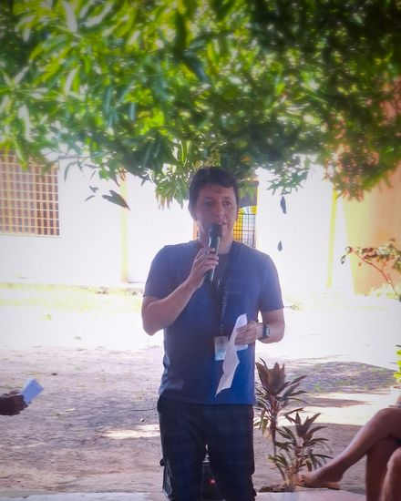
O primeiro campo é o mais próximo da rotina profissional de Paulo. A Psicologia Social parte da ideia de que o sofrimento, os vínculos e as escolhas das pessoas só se compreendem em suas condições históricas, econômicas e culturais, e a Proteção Social Básica é o lugar onde essa ideia vira rotina de trabalho. O trabalho se organiza em três serviços que, segundo a Tipificação Nacional de Serviços Socioassistenciais (CNAS, 2009), compõem esse nível de proteção, e o interesse recai sobre o papel do psicólogo em cada um deles (CFP, 2021). A literatura nacional sobre a inserção da Psicologia nesse nível de proteção aponta a escassez de referenciais teórico-metodológicos específicos e a aproximação com a Psicologia Social Comunitária (SILVA; CORGOZINHO, 2011), registra o descompasso entre uma formação voltada à clínica e as exigências do SUAS (MELO; BRUSIUS, 2018) e organiza o acervo da área em atividades desenvolvidas e dificuldades enfrentadas (SOUSA et al., 2021).
O primeiro é o Serviço de Proteção e Atendimento Integral à Família (PAIF), trabalho social de caráter continuado com famílias do território, que envolve acolhida, acompanhamento familiar, oficinas e articulação com a rede. O segundo é o Serviço de Proteção Social Básica no Domicílio para pessoas com deficiência e idosas, que leva o atendimento à casa do usuário e exige atenção às barreiras de acesso, ao papel dos cuidadores e ao risco de isolamento. O terceiro é o Serviço de Convivência e Fortalecimento de Vínculos (SCFV), realizado em grupos organizados por ciclos de vida, que busca ampliar trocas culturais, prevenir situações de risco e fortalecer a convivência comunitária. Ao redor desses serviços estão ainda a busca ativa, o acesso a benefícios e ao Cadastro Único e a articulação com a saúde, a educação e a proteção especial.
Sobre esse conjunto, o interesse de Paulo se organiza em perguntas que o próprio serviço coloca. Como exercer a escuta qualificada sem transformar o CRAS em consultório? Como a atuação do psicólogo se distingue, e ao mesmo tempo se complementa, do trabalho do assistente social dentro da equipe de referência? Que lugar ocupam a prevenção, a matricialidade sociofamiliar e a participação dos usuários? Como lidar com o sigilo, com a produção de documentos psicológicos (CFP, 2019) e com os limites entre a Proteção Social Básica e a Especial? Quanto à matricialidade sociofamiliar, revisão integrativa de artigos publicados entre 2014 e 2019 assinala a forte presença do caráter familista na condução do trabalho social com famílias, o que recomenda examinar o conceito de modo crítico. O propósito é produzir conhecimento que aprimore a técnica, a ética e a metodologia do trabalho e que, ao voltar ao serviço, torne a garantia de direitos mais efetiva.
Esse propósito também é um convite a quem trabalha em Roraima: veja o que a literatura já traz sobre o psicólogo no SUAS do estado, o que falta e como começar a buscar.
Migração, refúgio e impactos institucionais
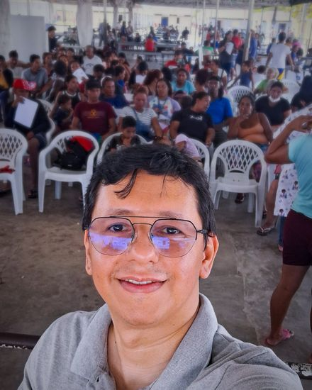
Do trabalho na rede de Boa Vista nasce a segunda frente de Paulo, em que se estudam os fluxos migratórios contemporâneos, com ênfase nos efeitos da migração oriunda da República Bolivariana da Venezuela sobre a organização e a oferta dos serviços socioassistenciais. Em Roraima, estado de fronteira com a Venezuela e a Guiana, o aumento da demanda pressiona a rede de atendimento, e compreender esse processo exige dados, análise institucional e sensibilidade às trajetórias de quem chega (SILVA; SOUSA, 2018; ARRUDA-BARBOSA; SALES; TORRES, 2020). A questão é como a rede se reorganiza e como assegurar acolhimento e proteção de qualidade tanto a migrantes quanto à população local. No campo da Psicologia, o atendimento a migrantes e refugiados dispõe de panorama nacional das políticas e das modalidades de intervenção (PRADO; ARAÚJO, 2019), de relatos de atenção psicossocial em Boa Vista, em abrigos da Operação Acolhida e em Centro de Atenção Psicossocial, e de pesquisa com psicólogos que identifica, entre os obstáculos, a ausência de intérpretes e de preparo, a desconfiança dos usuários e um contexto precário e xenófobo. No plano normativo, a Lei de Migração assegura ao migrante o acesso a serviços públicos de saúde e de assistência social, sem discriminação em razão da nacionalidade e da condição migratória, e a Lei do Refúgio disciplina a proteção de solicitantes e refugiados (BRASIL, 1997; BRASIL, 2017).
Antropologia Social e relações interétnicas
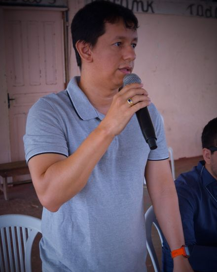
A terceira frente vem da formação de Paulo como mestre em Antropologia Social, que sustenta o estudo da mobilidade humana transfronteiriça, dos processos de acolhimento e das dinâmicas socioculturais de populações tradicionais, com especial dedicação à migração dos indígenas da etnia Warao para Boa Vista/RR (MOREIRA, 2018). Os Warao são povo originário do delta do rio Orinoco, na Venezuela, e sua presença na cidade, que se intensificou a partir de meados da década de 2010, exige que os serviços escutem esse grupo em seus próprios termos, reconhecendo sua organização social, sua língua e suas formas de cuidado, e revisem práticas que tratam a diferença cultural como obstáculo e não como direito. A literatura recente sobre o acolhimento de indígenas venezuelanos nos abrigos de Roraima, no âmbito da Operação Acolhida, acrescenta a esse debate a análise dos conflitos e das economias morais que atravessam esses espaços (TARDELLI, 2025). O relatório do ACNUR (ACNUR, 2021) tem por finalidade qualificar os serviços e as políticas destinados às famílias Warao, e estudo sobre a experiência venezuelana em Roraima contrapõe a gestão comunitária autônoma ao controle institucional do abrigamento.
Substâncias psicoativas: prevenção, gamificação e psicometria
A quarta frente retoma um tema que Paulo acompanha há muito tempo: o uso de substâncias psicoativas, objeto de sua pesquisa e de sua atuação, inclusive na CEPED, e que permanece entre os interesses. A contribuição mais específica refere-se à prevenção por meio da gamificação: a construção de jogos que veiculam informação, reflexão e diálogo sobre o tema a públicos diversos, de modo lúdico e participativo. Em sentido estrito, a gamificação consiste no uso de elementos de design de jogos em contextos que não são jogos (DETERDING et al., 2011), o que a distingue do jogo educativo, ou jogo sério, concebido como jogo completo; os instrumentos aqui tratados aproximam-se, em rigor, do segundo grupo, e o termo é empregado em sentido amplo. A literatura de revisão mapeia jogos sérios voltados à prevenção e ao tratamento do uso de álcool e outras drogas por jovens e, para o cigarro eletrônico, relata melhora de conhecimento, de percepção de risco e de autoeficácia, com a conclusão de que a abordagem é promissora, ao passo que os efeitos da gamificação dependem do contexto e dos usuários (HAMARI; KOIVISTO; SARSA, 2014). A abordagem interessa à prevenção por substituir a lição expositiva por situações em que o participante escolhe, discute e aprende com as consequências das escolhas. A distinção é relevante porque a revisão da Cochrane sobre prevenção escolar diferencia os currículos centrados em informação, que supõem que conhecer basta para mudar o comportamento, das abordagens de competência social, cujo resultado para o uso de maconha foi mais favorável, ainda que com intervalo de confiança que incluía o valor nulo (FAGGIANO et al., 2014). Os padrões internacionais de prevenção reúnem as evidências disponíveis sobre intervenções e políticas eficazes (UNODC; OMS, 2018).
A segunda parte do trabalho de Paulo com o tema é a validação. Com base nos saberes da Psicologia, sobretudo da psicometria, realiza-se a validação dos jogos e dos bancos de perguntas que os compõem, de modo que sejam não apenas criativos, mas também confiáveis. Em termos gerais, isso envolve reunir evidências de que o conteúdo é adequado e representativo do que se quer ensinar, geralmente com a avaliação de especialistas e o cálculo do Índice de Validade de Conteúdo (ALEXANDRE; COLUCI, 2011), verificar a clareza e a pertinência de cada pergunta e analisar o desempenho dos itens, como dificuldade e capacidade de discriminar, pela psicometria clássica ou pela Teoria de Resposta ao Item (PASQUALI, 2009; ARAUJO; ANDRADE; BORTOLOTTI, 2009). O resultado é uma ferramenta preventiva construída com método científico, ressalvado que a validade de conteúdo é apenas a etapa inicial, a ser complementada por outras formas de validade e pela análise de confiabilidade, e que não equivale, por si, à demonstração de eficácia preventiva.
O tema dialoga com a Proteção Social Básica, que atua na prevenção, no fortalecimento de vínculos e no encaminhamento à rede de saúde, em especial aos Centros de Atenção Psicossocial (CAPS), e com abordagens como a redução de danos, que privilegiam o cuidado e a garantia de direitos em vez da punição (CFP, 2021). A trajetória dessa estratégia no país, cujo marco foi a epidemia de AIDS dos anos 1980, está sistematizada em artigo da revista Psicologia: Ciência e Profissão.
Religião, violência e escola: linhas anteriores
Antes de ingressar no SUAS, a produção de Paulo concentrou-se na Psicologia da Religião e na relação entre o discurso institucional religioso e a violência (A fé como sacronegócio), com apresentações sobre religião e saúde mental. No mesmo período, foram publicados e apresentados trabalhos sobre prevenção e controle do bullying e da violência escolar e sobre a percepção docente da inclusão escolar. Tais linhas permanecem como referência para a leitura da violência e dos vínculos no território. Nesse ponto, revisões sobre religiosidade e saúde mental indicam associação geralmente positiva com desfechos como depressão e uso de álcool e outras drogas, mas também associações negativas, ligadas à opressão e à violência, o que torna pertinente a leitura crítica do discurso institucional religioso.
Como os campos se articulam
Os quatro campos formam um mesmo projeto, o de Paulo. A Psicologia Social e a Proteção Social Básica dão o lugar de prática e o objeto principal; o estudo da migração e a Antropologia explicam por que o público atendido mudou e como respeitar sua diversidade; e o trabalho com substâncias psicoativas une prevenção, gamificação e rigor psicométrico, lembrando que o cuidado em liberdade depende de rede, de vínculo e de território. É dessa combinação que nasce o interesse de Paulo em produzir conhecimento a partir do serviço e devolver ao serviço análises que melhorem o acolhimento, a escuta e a garantia de direitos.
Psicologia em Roraima
Esta seção apresenta um panorama quantitativo da distribuição de psicólogas(os) no Brasil e em Roraima e examina, em caráter exploratório, a produção científica sobre a atuação da(o) psicóloga(o) no Centro de Referência de Assistência Social (CRAS) no estado. Os dados provêm do painel do Conselho Federal de Psicologia (CFP), atualizado em 14 de setembro de 2026, do Instituto Brasileiro de Geografia e Estatística (IBGE) e de estudos locais. A exposição adota a lógica do afunilamento, em que cada nível recorta o anterior: o país, o estado, a capital, a assistência social e, por fim, o CRAS.
Distribuição de psicólogas(os): do âmbito nacional ao CRAS
- Brasil: 612.789 psicólogas(os)O contingente corresponde a aproximadamente 287 profissionais por 100 mil habitantes, calculados sobre a população estimada de 213,4 milhões em 2025.
- Roraima: 1.197 psicólogas(os)O número representa cerca de 0,2% do contingente nacional, o menor entre os estados, e aproximadamente 162 profissionais por 100 mil habitantes (população estimada de 738,8 mil em 2025). Constam 1.015 mulheres (84,8%) e 157 homens; a soma por sexo (1.172) é inferior ao total, e a diferença de 25 registros não está especificada nos dados apresentados. Os registros do CFP seguem o endereço informado na ficha de cadastro profissional.
- Boa Vista: contagens disponíveis por área de atuaçãoA capital concentra 64,9% da população do estado (Censo 2022). Na educação, levantamento realizado em 2018 identificou 22 psicólogas(os). Na atenção básica em saúde, o sindicato da categoria registra 13 profissionais para 120 recomendados pelo CFP (2025).
- Assistência social: 24 CRAS, com contingente de psicólogas(os) não identificadoA rede compreende 8 CRAS na capital (7 fixos e 1 itinerante) e 16 no interior. Não foram localizadas, em fonte pública, informações sobre o número de psicólogas(os) que atuam nos CRAS do estado; presume-se que o dado conste dos microdados do Censo SUAS. Em âmbito nacional, o Censo SUAS 2018 contabilizou 10.529 psicólogas(os) em CRAS, 10,2% dos trabalhadores dessas unidades (CARVALHO et al., 2021).
- Produção científica sobre a atuação no CRAS: um único trabalhoNas buscas realizadas, o único texto dedicado à atuação da(o) psicóloga(o) no CRAS em Roraima é Psicologia e SUAS (XAVIER, 2022), elaborado pelo autor deste sítio a partir da experiência em um CRAS de Boa Vista.
O panorama descreve uma categoria numericamente pequena e em expansão (671 inscritos em 2018, 873 em 2023 e 1.197 em 2026, o que equivale a um aumento de aproximadamente 78% em relação a 2018), com contagens publicadas para os campos da educação e da saúde, mas não para o da assistência social. No CRAS, a produção publicada sobre a atuação profissional no estado restringe-se, nas buscas realizadas, a um único texto, de autoria do próprio autor deste sítio. Essa lacuna é detalhada na subseção seguinte.
Fontes: CFP, A Psicologia em números; IBGE, Roraima (Censo 2022 e estimativa de 2025); população do Brasil em 2025, segundo estimativa do IBGE (213.421.037); Silva e Souza, 2023; Folha BV, com dados do Sindpsi-RR. As taxas por 100 mil habitantes e os percentuais são cálculos próprios; contagens referentes a anos distintos podem empregar critérios distintos.
Produção científica sobre a atuação da(o) psicóloga(o) no CRAS em Roraima
Nas buscas exploratórias realizadas em outubro de 2026, o único trabalho identificado que trata especificamente da atuação da(o) psicóloga(o) no CRAS em Roraima é Psicologia e SUAS: o psicólogo na proteção social básica, de autoria do autor deste sítio. Trata-se do trabalho de conclusão da especialização em Psicologia Social (2022), que analisa a atuação profissional na proteção social básica a partir da experiência em um CRAS de Boa Vista. A condição constitui limitação, e não avanço: um único texto, de autoria única e referente a um único serviço, não configura um corpo de literatura. Permanecem sem abordagem outros municípios, outros CRAS, o interior do estado e a perspectiva das pessoas atendidas. Cumpre distinguir esse recorte da produção de Psicologia sobre Roraima em outros temas, que existe: relatos e estudos sobre atenção psicossocial a migrantes em abrigos e em CAPS de Boa Vista, sobre a saúde mental de imigrantes venezuelanos e sobre Psicologia e povos indígenas em Roraima.
| Trabalho | Foco | Trata da atuação da(o) psicóloga(o) no CRAS? |
|---|---|---|
| Psicologia e SUAS (Xavier, 2022) | Atuação da(o) psicóloga(o) na proteção social básica, a partir do CRAS | Sim (autoria do autor deste sítio) |
| Dissertação do PPGSOF/UFRR | Acesso de migrantes ao SUAS em Boa Vista, com técnicos de dois CRAS | Não constitui o foco |
| Dissertação do PROCISA/UFRR (2024) | Intersetorialidade entre saúde mental e assistência social | Não constitui o foco |
| Silva e Souza (2023) | Psicólogas(os) na educação em Boa Vista (16 entrevistadas(os)) | Não; trata do campo da educação |
Em outros estados, a temática dispõe de pesquisas realizadas com psicólogas(os) do serviço. No Rio Grande do Norte, estudo entrevistou 20 psicólogos em 17 CRAS da região metropolitana de Natal (Psicologia & Sociedade), e outro, com 15 psicólogos em 14 CRAS do interior do estado (OLIVEIRA et al., 2014). No Rio Grande do Sul, há investigação sobre as práticas psicológicas nos CREAS do interior (Psicologia: Ciência e Profissão). A revisão sistemática nacional, por sua vez, reuniu 35 artigos sobre a atuação da(o) psicóloga(o) no CRAS publicados entre 2011 e 2020. Em Roraima, esse recorte permanece praticamente inexplorado. Informações sobre outros trabalhos acerca da atuação da(o) psicóloga(o) no CRAS ou no SUAS do estado podem ser encaminhadas pelos canais indicados na seção Contato.
Busca exploratória realizada em outubro de 2026, sem pretensão de censo: não se descarta a existência de trabalhos não recuperados pelas buscas. O foco de cada trabalho foi verificado a partir dos resumos publicados nos repositórios da UFRR e nas bases citadas.
Lacunas e agenda de pesquisa sobre o SUAS em Roraima
Nas buscas exploratórias realizadas em outubro de 2026, nas bases abertas indicadas na seção Leituras e fontes e nos repositórios de defesas da UFRR, a literatura sobre a assistência social em Roraima mostra-se, em boa parte, associada à migração venezuelana, ao povo Warao e à saúde, ao passo que a produção sobre a atuação da(o) psicóloga(o) no SUAS local restringe-se a um único texto. Não se trata de levantamento sistemático nem de contagem exaustiva, mas de caracterização preliminar das áreas em que a produção avançou e daquelas em que há espaço para investigação.
- Brasil: a atuação da(o) psicóloga(o) no CRASRevisão sistemática da literatura referente ao período de 2011 a 2020 localizou 182 artigos e manteve 35, que atenderam a todos os critérios estabelecidos.
- Roraima: a assistência socialHá estudos sobre pobreza e migração, acolhimento, abrigos e acesso aos serviços; a dissertação do PPGSOF/UFRR, por exemplo, trata do acesso de migrantes ao SUAS em Boa Vista, com técnicos de dois CRAS.
- Roraima: a atuação da(o) psicóloga(o) na assistência socialConstitui o recorte menos explorado. Sobre a atuação no CRAS, o único texto localizado é Psicologia e SUAS (2022). O restante provém de recortes vizinhos: dissertação do PROCISA/UFRR (2024) sobre a intersetorialidade entre saúde mental e assistência social e o único levantamento sobre psicólogas(os) no município, referente à educação, com 16 entrevistadas(os), apresentado pelos autores como pioneiro.
Permanecem em aberto questões cuja formulação adequada depende do conhecimento advindo do serviço, entre as quais:
- De que modo a escuta e o acompanhamento familiar se modificam quando a família é migrante ou indígena e a língua é outra?
- Como se articulam, na prática do território, a(o) psicóloga(o) do CRAS e a Rede de Atenção Psicossocial (RAPS)?
- Qual é o lugar da(o) psicóloga(o) quando a demanda cresce em ritmo superior ao da equipe?
- O que as famílias atendidas relatam sobre o serviço recebido?
Relatos de experiência, estudos de caso e pesquisas de mestrado constituem percursos metodológicos possíveis para respondê-las. Quanto à terceira questão, estudo do IPEA com indicadores do Censo SUAS 2019 registra que cerca de 70% dos CRAS e CREAS não possuíam equipe de referência completa e que apenas 10% dos trabalhadores atuavam havia mais de cinco anos na unidade (IPEA).
| Indicador | Valor | Fonte |
|---|---|---|
| Artigos que atenderam a todos os critérios na revisão sobre o CRAS (2011–2020) | 35 de 182 (19,2%) | Sousa et al., 2021 |
| Psicólogas(os) inscritos em Roraima | 671 (2018), 873 (2023) e 1.197 (2026); aumento de 78% desde 2018 | Silva e Souza, 2023; CFP, 2026 |
| Psicólogas(os) da educação em Boa Vista, entre os inscritos no estado (2018) | 22 de 671 (3,3%) | Silva e Souza, 2023 |
| Psicólogas(os) na atenção básica de saúde de Boa Vista, frente ao recomendado pelo CFP (2025) | 13 de 120 (10,8%) | Folha BV, com dados do Sindpsi-RR |
| Trabalhos encontrados sobre a atuação da(o) psicóloga(o) no CRAS em Roraima | 1 (autoria do autor deste sítio, 2022) | Busca exploratória, out. 2026 |
| CRAS em Roraima | 24 (8 na capital, sendo 7 fixos e 1 itinerante, e 16 no interior) | Informação do autor, com base na rede local |
Nota metodológica: trata-se de estatística descritiva, com percentuais calculados a partir dos valores publicados nas fontes. Os valores provêm de pesquisas e levantamentos distintos, referentes a anos distintos, e não permitem inferências sobre a literatura em geral. O dado mais direto, o número de psicólogas(os) que atuam nos CRAS de Roraima, não foi localizado e presume-se disponível nos microdados do Censo SUAS.
Fontes: revisão sistemática sobre a atuação do psicólogo no CRAS (2011–2020); Psicólogas(os) no Sistema Educacional de Boa Vista/Roraima (Psicologia: Ciência e Profissão); Psicologia e SUAS: o psicólogo na proteção social básica; defesas do PPGSOF e do PROCISA, da UFRR. Busca exploratória realizada em outubro de 2026, sem pretensão de censo.
Leituras e fontes
Livros recomendados
Para quem está começando no SUAS, ou quer olhar a política por outro ângulo, Paulo indica duas leituras que se complementam: uma conta como a Psicologia entrou na Assistência Social, a outra mostra o trabalho do dia a dia em um CRAS.
- Acesso aberto
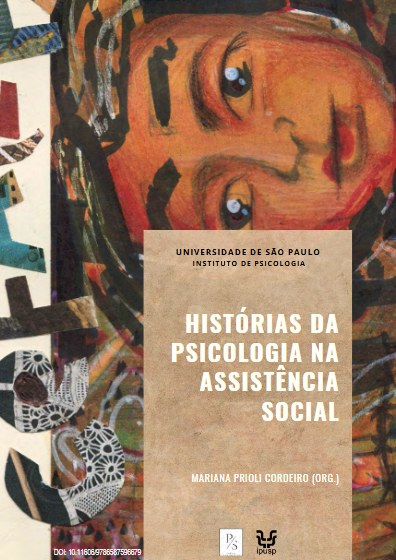
História da políticaHistórias da Psicologia na Assistência SocialMariana Prioli Cordeiro (org.). Reúne memórias de psicólogas e psicólogos que atuaram antes e depois da criação do SUAS e mostra que a Psicologia ajudou a construir a política, em vez de chegar a ela de repente. 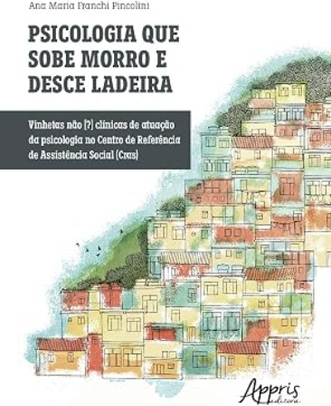
Prática no CRASPsicologia que sobe morro e desce ladeira: vinhetas não [?] clínicas de atuação da psicologia no CRASAna Maria Franchi Pincolini. Dez vinhetas, em tom de conversa, sobre a atuação não psicoterapêutica no território e sobre os desafios de chegar ao SUAS sem o tema ter passado pela graduação.
Fontes: Portal de Livros Abertos da USP (licença CC BY-NC 4.0); Amazon Brasil (Editora Appris).
Sites científicos recomendados
Para ir direto às fontes, Paulo indica três sites que reúnem artigos científicos de Psicologia e de saúde.
- Periódicos em acesso abertoSciELO BrasilBiblioteca eletrônica com revistas científicas do Brasil e da América Latina, com texto completo. Boa porta de entrada para a Psicologia produzida no país.
- Saúde na América LatinaBVS Saúde (Biblioteca Virtual em Saúde)Portal que pesquisa de uma só vez bases como a LILACS e a MEDLINE e outras fontes de informação em saúde, útil para saúde mental e políticas de saúde.
- Literatura biomédicaPubMedBase da Biblioteca Nacional de Medicina dos Estados Unidos, com milhões de referências de artigos em saúde, inclusive psiquiatria e psicologia. A busca funciona melhor em inglês.
Sites da profissão
Estes dois não são bases científicas, mas cuidam da profissão: um é da associação norte-americana de psicologia e o outro, do conselho federal brasileiro.
- Psicologia internacionalAPA, American Psychological AssociationAssociação norte-americana de psicologia. Reúne o dicionário de psicologia, o código de ética, as normas de citação APA e notícias da ciência psicológica. A base PsycInfo, em geral, exige assinatura.
- Profissão no BrasilCFP, Conselho Federal de PsicologiaResoluções, notas técnicas, o Código de Ética Profissional e as publicações do CREPOP. Reúne as normas que orientam o exercício da profissão no país.
Mapas para consulta
Quem trabalha no território precisa saber onde estão os serviços. Paulo indica dois mapas oficiais, um da assistência social e outro da saúde mental, para localizar a rede, entender o território e articular encaminhamentos.
- Assistência socialMapa Social do MDSFerramenta do Ministério do Desenvolvimento e Assistência Social para consultar mapas e dados sobre serviços e programas sociais no território.
- Saúde mentalRede de Atenção Psicossocial (RAPS), no NovaSAGEPágina do Ministério da Saúde sobre a RAPS, a rede de cuidado em saúde mental e uso de álcool e outras drogas, da qual fazem parte os CAPS.
Contato
Para falar com Paulo, os contatos institucionais são os de dois serviços da rede pública de assistência social de Boa Vista/RR: um municipal, o CRAS, e um estadual, o CAS Vila Jardim. Para colaboração em pesquisa e consulta à produção, os perfis acadêmicos e profissionais reúnem currículo, publicações e identificadores; as redes sociais, no rodapé, concentram divulgação e conteúdo de caráter mais informal.
Locais de atuação
Rua Santo Agostinho, nº 193, Centenário, Boa Vista, RR
Ver localização →
R. James Meirelles Sobreiro Júnior, 1876, Cidade Satélite, Boa Vista, RR
Ver localização →
Perfis acadêmicos e profissionais
Referências
- ALEXANDRE, N. M. C.; COLUCI, M. Z. O. Validade de conteúdo nos processos de construção e adaptação de instrumentos de medidas. Ciência & Saúde Coletiva, v. 16, n. 7, p. 3061-3068, 2011. DOI: 10.1590/S1413-81232011000800006. Acesso em: 2 out. 2026.
- ALTO COMISSARIADO DAS NAÇÕES UNIDAS PARA REFUGIADOS (ACNUR). Os Warao no Brasil: contribuições da antropologia para a proteção de indígenas refugiados e migrantes. 2. ed. rev. ampl. [S. l.]: ACNUR, 2021. Disponível em: acnur.org. Acesso em: 2 out. 2026.
- ARAUJO, E. A. C.; ANDRADE, D. F.; BORTOLOTTI, S. L. V. Teoria da Resposta ao Item. Revista da Escola de Enfermagem da USP, v. 43, n. esp., p. 1000-1008, 2009. DOI: 10.1590/S0080-62342009000500003. Acesso em: 2 out. 2026.
- ARRUDA-BARBOSA, L.; SALES, A. F. G.; TORRES, M. E. M. Impacto da migração venezuelana na rotina de um hospital de referência em Roraima, Brasil. Interface, Botucatu, v. 24, e190807, 2020. Disponível em: doi.org/10.1590/Interface.190807. Acesso em: 30 set. 2026.
- BRASIL. Lei nº 9.474, de 22 de julho de 1997. Define mecanismos para a implementação do Estatuto dos Refugiados de 1951. Diário Oficial da União, Brasília, 1997. Disponível em: planalto.gov.br. Acesso em: 1 out. 2026.
- BRASIL. Ministério do Desenvolvimento Social e Combate à Fome. Conselho Nacional de Assistência Social. Política Nacional de Assistência Social (PNAS/2004). Brasília, 2004.
- BRASIL. Lei nº 13.445, de 24 de maio de 2017. Institui a Lei de Migração. Diário Oficial da União, Brasília, 2017. Disponível em: planalto.gov.br. Acesso em: 1 out. 2026.
- CARVALHO, D. L.; NEGREIROS, F.; BRITO, F. M. G.; FREIRE, S. E. A. Atuação de psicólogos nos CRAS do nordeste: uma revisão sistemática. Revista Psicologia Política, 2021. Disponível em: pepsic.bvsalud.org. Acesso em: 2 out. 2026.
- CONSELHO FEDERAL DE PSICOLOGIA (CFP). Resolução nº 6, de 29 de março de 2019. Institui regras para a elaboração de documentos escritos produzidos pela(o) psicóloga(o) no exercício profissional. Brasília: CFP, 2019. Disponível em: sepsi.ufscar.br. Acesso em: 1 out. 2026.
- CONSELHO FEDERAL DE PSICOLOGIA (CFP). Referências técnicas para atuação de psicólogas(os) no CRAS/SUAS. 3. ed. Brasília: CFP, 2021. Disponível em: site.cfp.org.br. Acesso em: 30 set. 2026.
- CONSELHO NACIONAL DE ASSISTÊNCIA SOCIAL (CNAS). Resolução nº 109, de 11 de novembro de 2009. Aprova a Tipificação Nacional de Serviços Socioassistenciais. Brasília: CNAS, 2009. Disponível em: crpsp.org. Acesso em: 1 out. 2026.
- DETERDING, S.; DIXON, D.; KHALED, R.; NACKE, L. From game design elements to gamefulness: defining “gamification”. In: INTERNATIONAL ACADEMIC MINDTREK CONFERENCE, 15., 2011, Tampere. Proceedings […]. New York: ACM, 2011. DOI: 10.1145/2181037.2181040. Acesso em: 2 out. 2026.
- FAGGIANO, F.; MINOZZI, S.; VERSINO, E.; BUSCEMI, D. Universal school-based prevention for illicit drug use. Cochrane Database of Systematic Reviews, n. 12, art. CD003020, 2014. DOI: 10.1002/14651858.CD003020.pub3. Acesso em: 2 out. 2026.
- HAMARI, J.; KOIVISTO, J.; SARSA, H. Does gamification work? A literature review of empirical studies on gamification. In: HAWAII INTERNATIONAL CONFERENCE ON SYSTEM SCIENCES, 47., 2014, Waikoloa. Proceedings […]. [S. l.]: IEEE, 2014. p. 3025-3034. DOI: 10.1109/HICSS.2014.377. Acesso em: 2 out. 2026.
- MELO, E. S.; BRUSIUS, A. A atuação da psicologia nas visitas domiciliares do CRAS. Clínica & Cultura, v. 7, n. 1, p. 21-37, 2018. Disponível em: periodicos.ufs.br. Acesso em: 2 out. 2026.
- MOREIRA, E. Os Warao no Brasil em cenas: “o estrangeiro…”. Périplos: Revista de Estudos sobre Migrações, v. 2, n. 2, p. 56-69, 2018. Disponível em: periodicos.unb.br. Acesso em: 30 set. 2026.
- OLIVEIRA, I. F. et al. Atuação dos psicólogos nos CRAS do interior do RN. Psicologia & Sociedade, v. 26, n. spe. 2, p. 103-112, 2014. Disponível em: scielo.br. Acesso em: 2 out. 2026.
- PASQUALI, L. Psicometria. Revista da Escola de Enfermagem da USP, v. 43, n. esp., p. 992-999, 2009. DOI: 10.1590/S0080-62342009000500002. Acesso em: 2 out. 2026.
- PRADO, M. A. M.; ARAÚJO, S. A. Políticas de atendimento a migrantes e refugiados no Brasil e aproximações da psicologia. Revista Psicologia Política, v. 19, n. 46, p. 570-583, 2019. Disponível em: pepsic.bvsalud.org. Acesso em: 2 out. 2026.
- SILVA, F. C. A.; SOUSA, E. M. A migração venezuelana e o aumento da pobreza em Roraima. Tensões Mundiais, Fortaleza, v. 14, n. 27, p. 105-119, 2018. Disponível em: revistas.uece.br. Acesso em: 30 set. 2026.
- SILVA, J. V.; CORGOZINHO, J. P. Atuação do psicólogo, SUAS/CRAS e Psicologia Social Comunitária: possíveis articulações. Psicologia & Sociedade, v. 23, n. spe., p. 12-21, 2011. Disponível em: scielo.br. Acesso em: 2 out. 2026.
- SOUSA, K. P. A. et al. A atuação do psicólogo no CRAS: uma revisão sistemática da literatura. Psicología, Conocimiento y Sociedad, 2021. DOI: 10.26864/PCS.v11.n2.8. Acesso em: 2 out. 2026.
- TARDELLI, G. Os Warao na encruzilhada: conflitos e economias morais nos abrigos indígenas de Roraima. Anuário Antropológico, Brasília, v. 50, e-154ut, 2025. Disponível em: periodicos.unb.br. Acesso em: 1 out. 2026.
- UNITED NATIONS OFFICE ON DRUGS AND CRIME (UNODC); WORLD HEALTH ORGANIZATION (WHO). International standards on drug use prevention. 2. ed. atual. Vienna: UNODC, 2018. Disponível em: unodc.org. Acesso em: 2 out. 2026.
- XAVIER, P. L. O. Psicologia e SUAS: o psicólogo na proteção social básica. 2022. Trabalho de conclusão de curso (Especialização em Psicologia Social) – União Brasileira de Faculdades, 2022. DOI: 10.13140/RG.2.2.27653.83688.